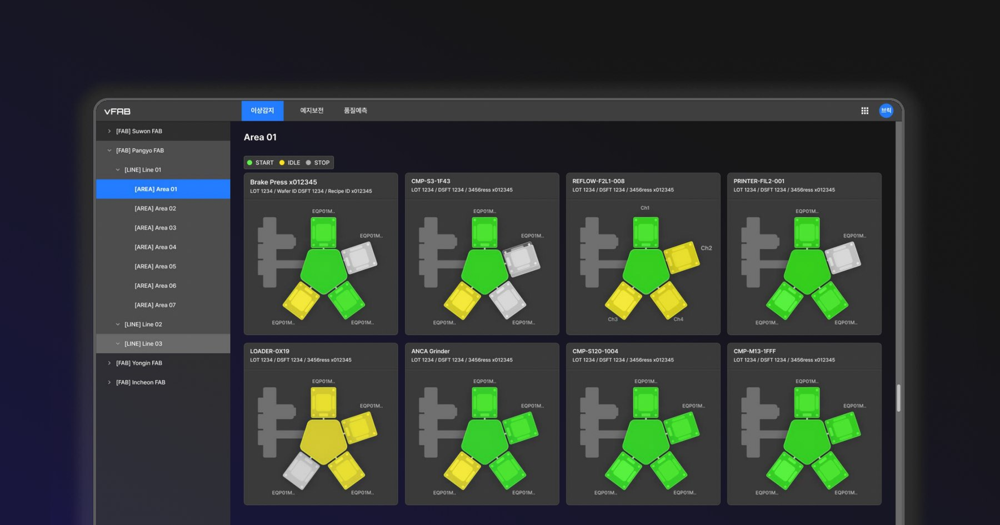
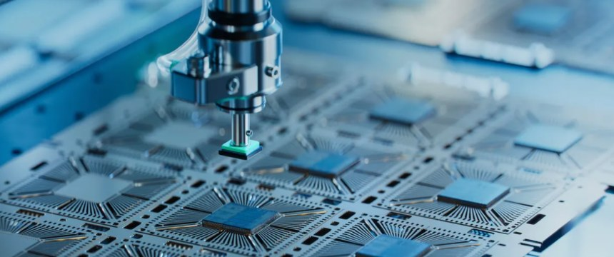
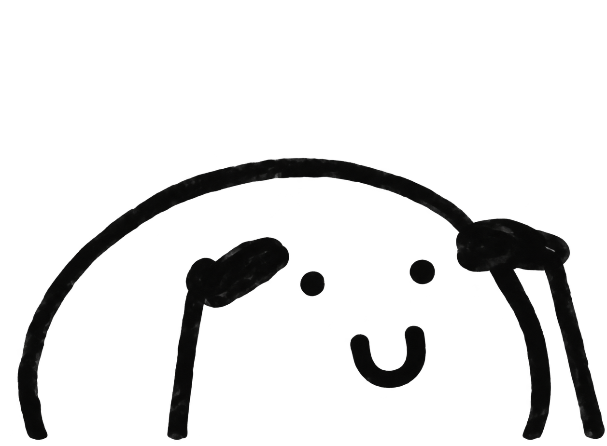
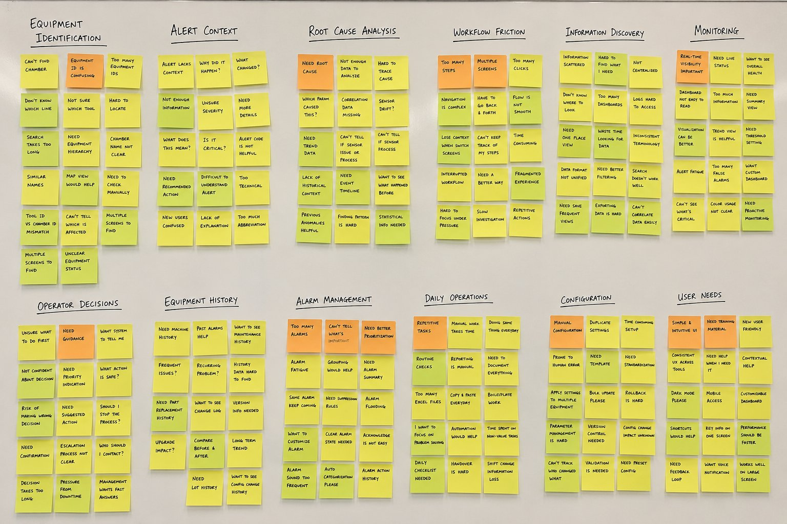
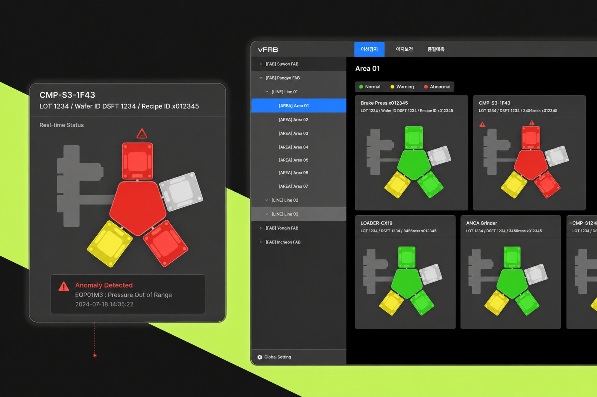
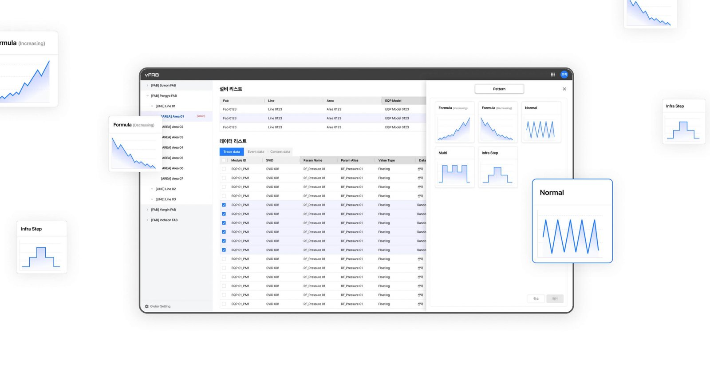
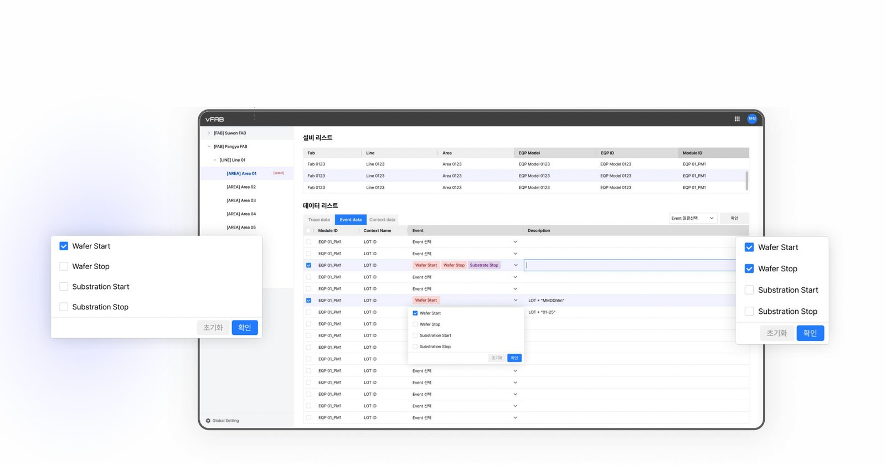
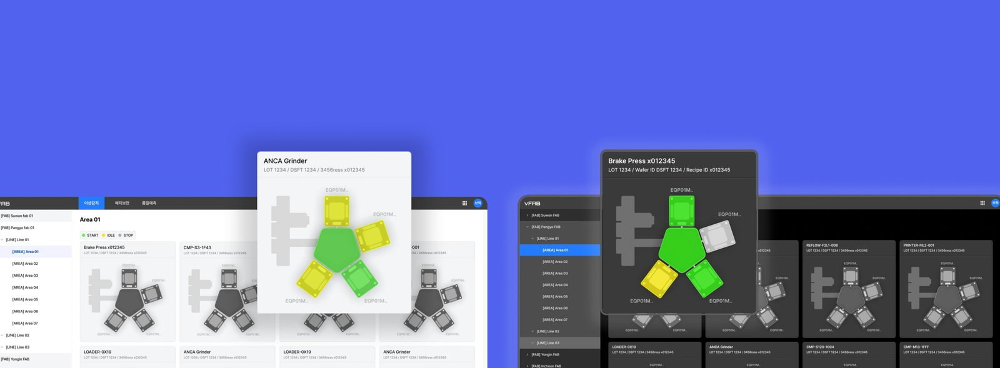

An AI-powered monitoring service that helps operators understand equipment anomalies before they become production losses.

I led the design of Semiconductor Anomaly Detection Service end to end, from research to final UI, working with data analysts and engineers so operators could find abnormal equipment, see why, and act. end to end, from user research to high-fidelity UI. It's an AI-powered monitoring platform for semiconductor manufacturing. Working closely with data analysts and engineers, I designed a monitoring experience that helps operators quickly find abnormal equipment, understand what caused it, and act with confidence.

Don't just say something is wrong.
Show where, and why.
Fabs generate thousands of alerts a day. Operators still spent most of their time working out which machine, which chamber and why, before they could act.

Turn a wall of raw alerts into a clear path to the root cause.
I interviewed operators and mapped their workflow on the fab floor, focusing on how they decided what to do when time mattered.

Pinpointing the chamber meant several screens and decoding long equipment IDs.
An alert said something was wrong, not what changed or whether to act now.
One anomaly meant switching between dashboards, logs and monitoring screens.
The same settings were repeated machine by machine, inviting mistakes.
Four testable hypotheses, drawn from the research, set the direction before wireframes.
Show operators which equipment has an anomaly.
Show where on the machine it happened, so no one has to decode an ID.
Each machine is drawn as it sits on the floor. When an anomaly comes in, the chamber itself lights up, and selecting it shows what changed.
Dense and sortable, but every row meant decoding a long equipment ID.
Familiar, but reaching one chamber took five levels of clicks.
Operators remember equipment by where it stands, not by its ID. Only the map answered “where” the moment an alert arrived; the tree stayed for moving between areas.
| Several chambers on one machine | Each chamber marked; the card shows the count, most severe first |
| Sensor stops reporting | Chamber hatched as No data, never shown as normal |
| Anomaly in another area | Count shown on that area in the tree, one click to jump there |
| Acknowledged, not yet resolved | Outline instead of fill, so it stays visible without competing with new alerts |
Original screens are confidential. Reconstructed from memory; data is illustrative.
Based on the research, I redesigned the monitoring experience so operators move from detection to understanding to action without breaking flow.
Consistent colours replace tables and numbers, so abnormal states read at a glance.

Traces, patterns and equipment details sit on one screen, so investigating never means leaving it.

Bulk configuration applies routine setup to many machines at once.

Detection, investigation and response now happen in one flow, with no IDs to decode and no systems to jump between.

An AI alert is only useful if people trust it. Showing what changed and where is what turned alerts into decisions. Next time I'd test with operators earlier to learn how much context they need before they act.